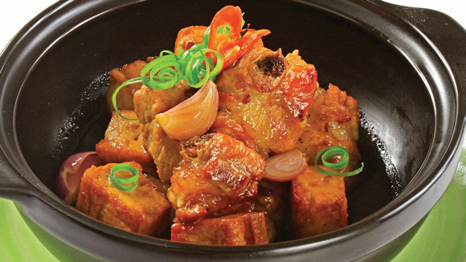

Sườn non kho đậu hũ

- Khẩu phần 4
- Chuẩn bị 20 phút
- Thực hiện 15 phút
Nguyên liệu
- 300g sườn non
- 2 miếng đậu hũ chiên
- 4 củ hành tím
- 1 trái dừa tươi
- 1 gói Gia vị Hoàn Chỉnh Thịt Kho, 1 thìa
súp dầu ăn, 1 thìa súp dầu ăn, 1 thìa cà phê tiêu
Hướng dẫn thực hiện
- Sườn non rửa sạch, chặt miếng vừa ăn. Hành tím lột vỏ, xắt mỏng. Ướp
sườn với hành tím và 1 gói Gia vị Hoàn Chỉnh Thịt Kho, để thấm 15 phút
- Đậu hũ xắt miếng vuông. Dừa chặt lấy nước
- Làm nóng dầu ăn, cho sườn đã ướp vào chiên, trở đều cho thịt thấm gia
vị. Khi thịt săn lại, cho nước dừa vào xăm xắp mặt thịt, thêm đậu hũ vào,
kho đến khi nước sệt lại là được. Tắt bếp, rắc tiêu lên.